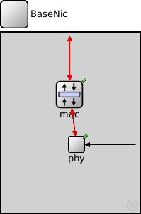
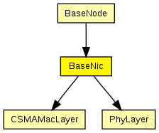
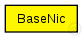

This documentation is released under the Creative Commons license
This documentation is released under the Creative Commons licenseThis NIC implements an 802.11 network interface card.
See also: Mac80211, Decider80211
Author: Marc Loebbers
The following diagram shows usage relationships between types. Unresolved types are missing from the diagram. Click here to see the full picture.
The following diagram shows inheritance relationships for this type. Unresolved types are missing from the diagram. Click here to see the full picture.
If a module type shows up more than once, that means it has been defined in more than one NED file.
| BaseNode (compound module) | (no description) |
| Name | Direction | Size | Description |
|---|---|---|---|
| upperGateIn | input |
to upper layers |
|
| upperGateOut | output |
from upper layers |
|
| upperControlOut | output |
control information |
|
| upperControlIn | input |
control information |
|
| radioIn | input |
radioIn gate for sendDirect |
| Name | Type | Default value | Description |
|---|---|---|---|
| mac.notAffectedByHostState | bool | false | |
| mac.coreDebug | bool |
debug switch |
|
| mac.headerLength | double |
length of the MAC packet header (in bits) |
|
| mac.slotDuration | double |
how long is a slot? [s] |
|
| mac.difs | double |
maximum time between a packet and its ack [s] |
|
| mac.maxTxAttempts | double |
maximum number of transmission attempts |
|
| mac.queueLength | int |
length of the MAC queue |
|
| mac.defaultChannel | double |
default channel |
|
| mac.bitrate | double |
bit rate [bps] |
|
| mac.txPower | double |
tx power [mW] |
|
| mac.contentionWindow | double |
contention window |
|
| phy.coreDebug | bool | ||
| phy.headerLength | int | 0 |
defines the length of the phy header (/preamble) |
| phy.usePropagationDelay | bool |
Should transmission delay be simulated? |
|
| phy.thermalNoise | double |
the strength of the thermal noise [dBm] |
|
| phy.useThermalNoise | bool |
should thermal noise be considered? |
|
| phy.analogueModels | xml |
Specification of the analogue models to use and their parameters |
|
| phy.decider | xml |
Specification of the decider to use and its parameters |
|
| phy.sensitivity | double |
The sensitivity of the physical layer [dBm] |
|
| phy.maxTXPower | double |
The maximum transimission power of the physical layer [mW] |
|
| phy.timeRXToTX | double |
switchTimes [s]: |
|
| phy.timeRXToSleep | double | ||
| phy.timeTXToRX | double | ||
| phy.timeTXToSleep | double | ||
| phy.timeSleepToRX | double | ||
| phy.timeSleepToTX | double | ||
| phy.initialRadioState | int |
// // This NIC implements an 802.11 network interface card. // // @see Mac80211, Decider80211 // @author Marc Loebbers // module BaseNic { gates: input upperGateIn; // to upper layers output upperGateOut; // from upper layers output upperControlOut; // control information input upperControlIn; // control information input radioIn; // radioIn gate for sendDirect submodules: mac: CSMAMacLayer { @display("p=96,87;i=block/layer"); } phy: PhyLayer { @display("p=106,157;i=block/process_s"); } //radio: SingleChannelRadio; // display: "p=200,30;b=30,25"; connections: mac.upperGateOut --> { @display("ls=black;m=m,25,50,25,0"); } --> upperGateOut; mac.upperGateIn <-- { @display("ls=black;m=m,15,50,15,0"); } <-- upperGateIn; mac.upperControlOut --> { @display("ls=red;m=m,75,50,75,0"); } --> upperControlOut; mac.upperControlIn <-- { @display("ls=red;m=m,85,0,85,0"); } <-- upperControlIn; phy.upperGateOut --> { @display("ls=black;m=m,25,50,25,0"); } --> mac.lowerGateIn; phy.upperGateIn <-- { @display("ls=black;m=m,15,50,15,0"); } <-- mac.lowerGateOut; phy.upperControlOut --> { @display("ls=red;m=m,75,50,75,0"); } --> mac.lowerControlIn; phy.upperControlIn <-- { @display("ls=red;m=m,85,0,85,0"); } <-- mac.lowerControlOut; radioIn --> phy.radioIn; }
This documentation is released under the Creative Commons license